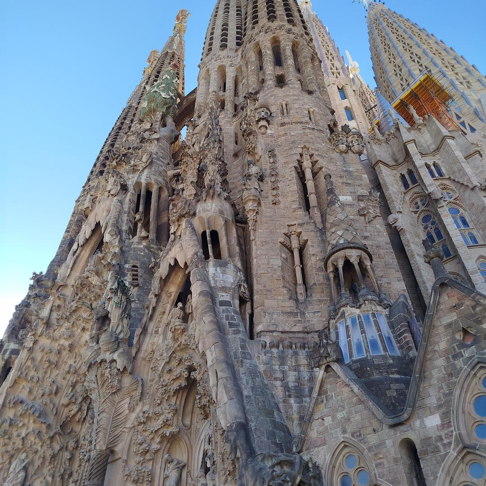
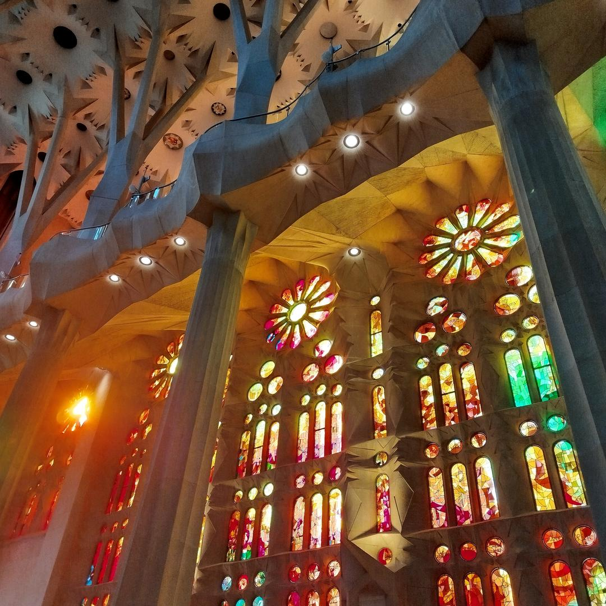
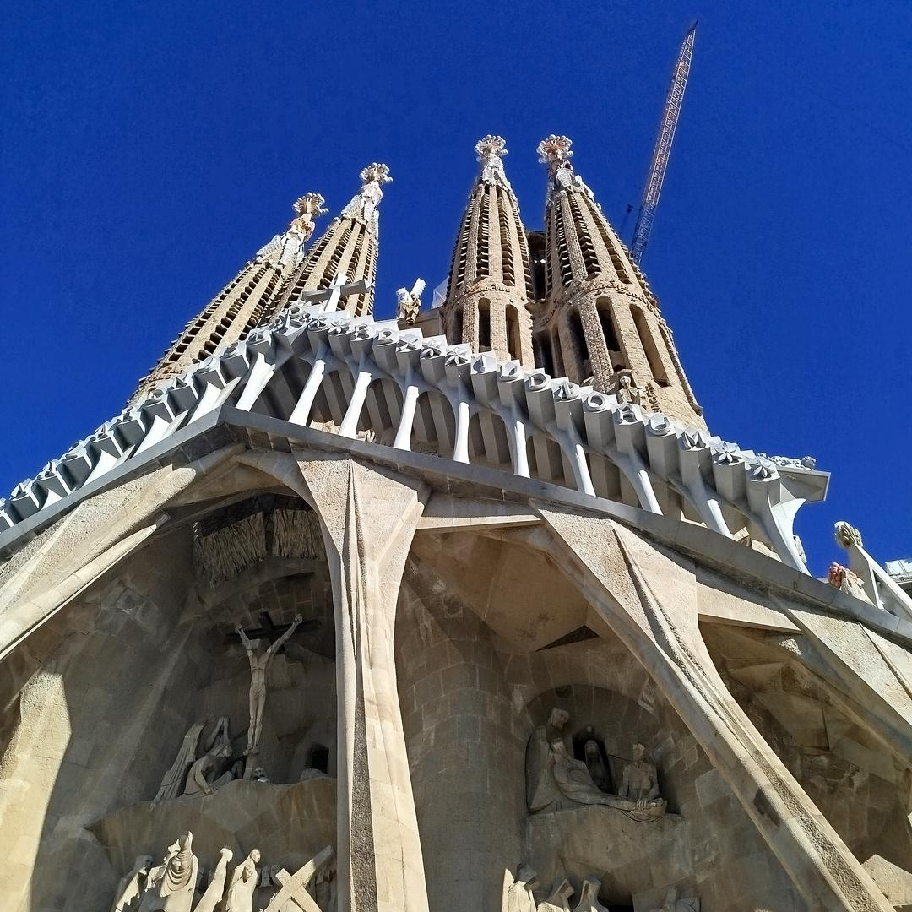
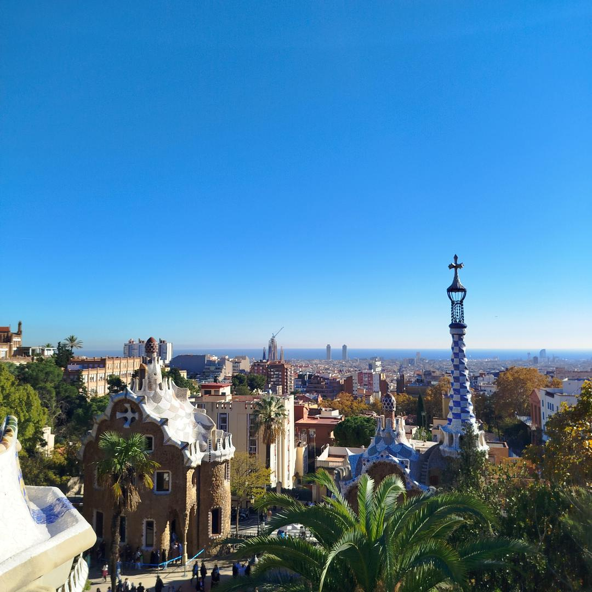
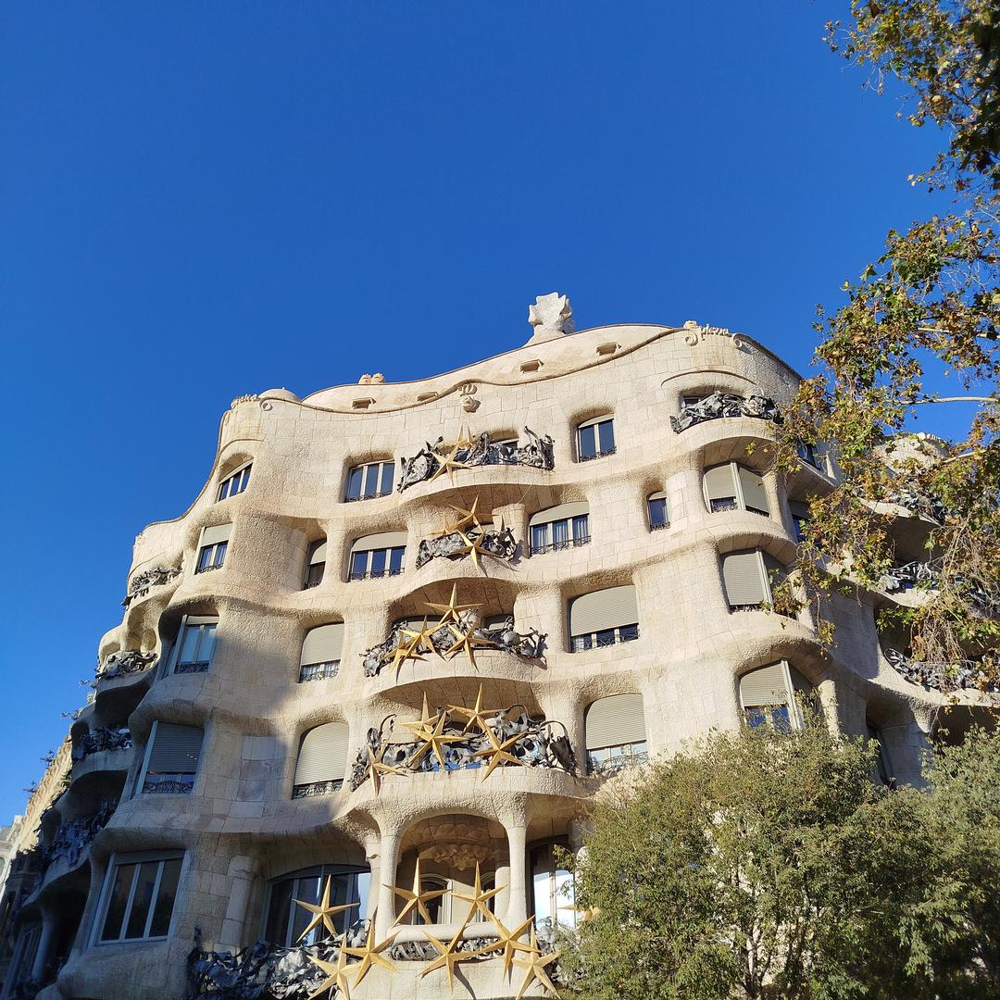
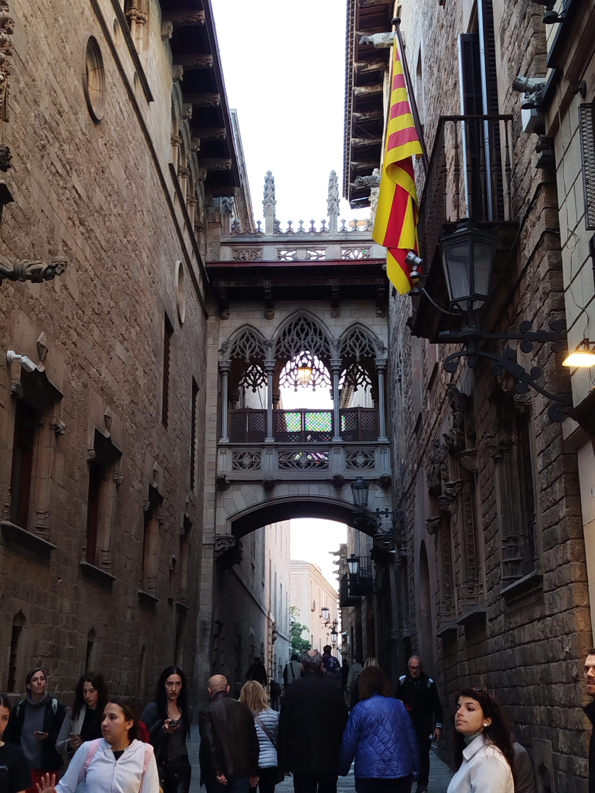
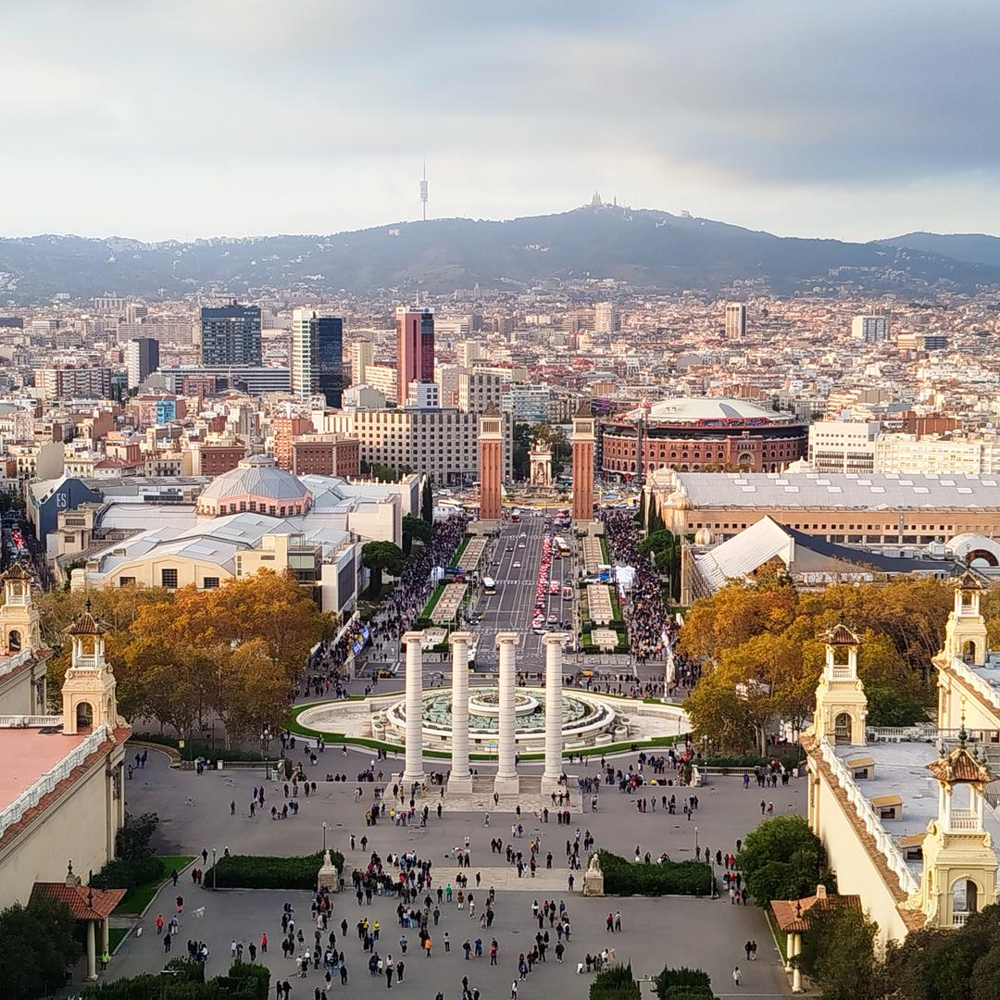
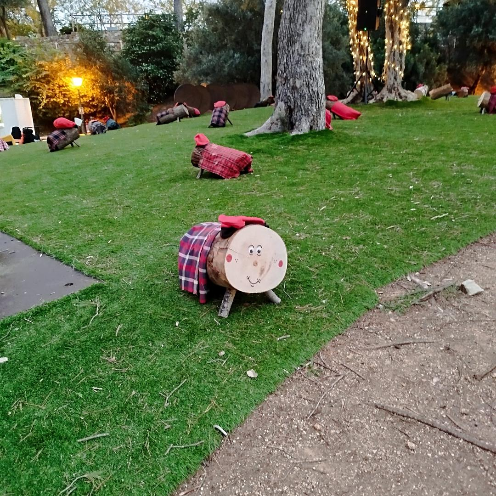
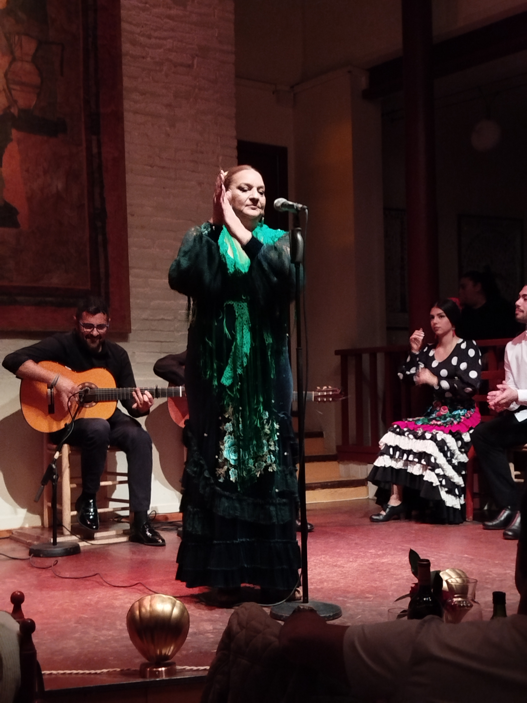

Christmas Charm in Barcelona: December 2024

In December 2024, we spent a festive weekend in Barcelona, immersing ourselves in the city's iconic sights and Christmas traditions. Highlights included marveling at the breathtaking Sagrada Familia, the whimsical Park Güell, and the architectural masterpieces of Casa Milà and Casa Batlló. We wandered along Las Ramblas, explored the enchanting El Bairro Gótico, and indulged in local flavors at La Boqueria. Our journey continued with visits to the vibrant seafront, the hilltop attractions of Montjuïc, and the stunning Museo Nacional de Arte de Catalunya.
Celebrating the season, we browsed charming Christmas markets and admired the traditional Caga Tiós. The trip concluded with an unforgettable flamenco show in Poble Espanyol, blending the holiday spirit with Barcelona’s rich cultural heritage.









 Bordeaux
Bordeaux
 Tallin & Riga Christmas Markets
Tallin & Riga Christmas Markets
 Barcelona, Vic & Girona
Barcelona, Vic & Girona
 Skopje, North Macedonia
Skopje, North Macedonia